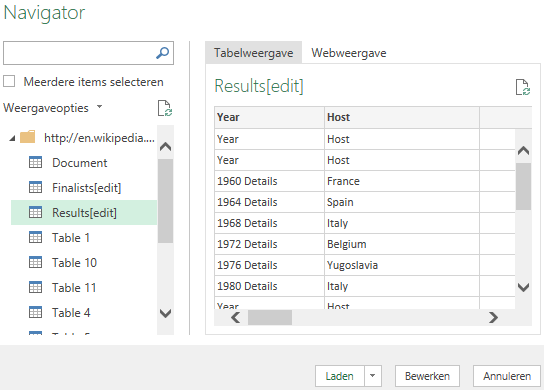
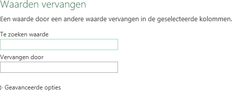

Webpagina's hebben vaak tabellen. De Power Query in Excel kan deze tabellen herkennen
en importeren. In deze taak ga je een aantal gegevens van de UEFA Europees voetbal
kampioenschap importeren die in een wikipedia pagina beschikbaar zijn.
Open a nieuwe lege werkmap.
Kies tab Gegevens > Van het web (groep Gegevens ophalen en transformeren).
Een dialoogvenster wordt weergegeven waarin de URL van de webpagina moet
worden ingevoerd.
Figuur: Dialoogvenster Van web
Voer voor de URL in
http://en.wikipedia.org/wiki/UEFA_European_Championship
en klik OK.
Er wordt een verbinding met de webpagina gemaakt.
Wanneer de verbinding gerealiseerd is wordt een
Navigator venster getoond waarin een lijst met alle
tabellen in de webpagina te zien is. Door op een tabel te klikken verschijnt
aan de rechterkant van het venster een voorbeeld van de gegevens.
Figuur: Venster Navigator voor UEFA pagina op Wikipedia

Selecteer tabel Results[edit] en klik dan op de knop
Bewerken.
De Query Editor wordt gestart in een nieuw venster. Aan de rechterkant onder
Queryinstellingen en onder Toegepaste
Stappen zie je de stappen die reeds zijn toegepast.
Vervolgens kun je de gegevens naar behoefte structureren, wijzigen en opschonen.
Achtereenvolgens ga je
alle kolommen verwijderen behalve Year en
Final Winners.
het woord “Details” verwijderen in kolom
Year.
alleen echte jaartallen in kolom Year
overhouden.
Selecteer de kolommen Year en Final
Winners door op de kolomkoppen te klikken met ingedrukte CTRL
toets. Kies dan Kolommen verwijderen (groep Kolommen beheren) > Andere kolommen verwijderen.
Selecteer kolom Year en kies Waarden vervangen (groep Transformeren)
Het dialoogvenster Waarden vervangen wordt
weergegeven.
Figuur: Dialoogvenster Waarden vervangen

Type Details in het tekstvak Te zoeken
waarde en laat het tekstvak Vervangen door leeg en
klik OK.
Selecteer kolom Year en klik op de filter keuzepijl in de
kolomkop. Deselecteer Year en klik
OK.
Kies Sluiten en laden(groep Sluiten) > Sluiten en laden.
De gegevens worden in een Excel tabel in een nieuw werkblad opgeslagen. Je
kunt nu met de gegevens werken en de Excel map voor later gebruik
opslaan.
Opmerking: Het is altijd mogelijk om de query achteraf te wijzigen.
Selecteer hiervoor een cel in de tabel en kies tab Query > Bewerken (groep Bewerken). De Query Editor wordt weer opgestart. Van hieruit kun je
tevens de gegevens vernieuwen, alle stappen worden dan herhaald.